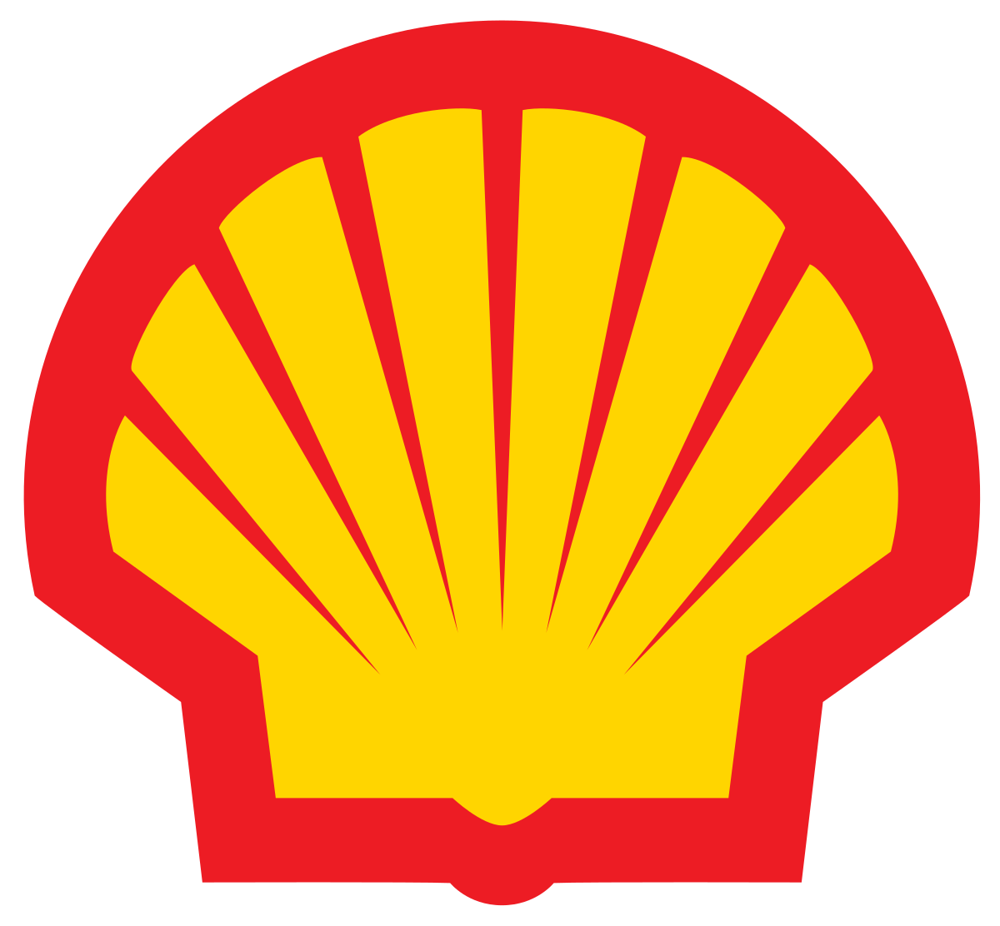

MB Auto
Maju Bersama Auto adalah perusahaan yang bergerak di bidang klub motor, menjadi wadah bagi para penggemar motor untuk berkumpul, berbagi pengalaman, dan mengembangkan passion bersama dalam dunia motor. Dengan komitmen untuk memperkuat komunitas motor, kami menyediakan berbagai program dan kegiatan yang menginspirasi, serta berupaya memberikan kontribusi positif bagi perkembangan budaya motor di Indonesia.
Visi dan Misi
Visi Kami Menjadi pusat klub motor terkemuka yang menginspirasi dan memperkuat komunitas penggemar motor di seluruh Indonesia, menciptakan pengalaman berkendara yang berkesan dan membentuk ikatan yang kuat di antara anggota klub dengan Menyediakan platform untuk para penggemar motor untuk berbagi pengetahuan, pengalaman, dan kegiatan yang memperkaya komunitas klub motor, Mengadakan acara dan kegiatan berkala yang mempererat hubungan antaranggota klub dan mempromosikan keselamatan berkendara yang bertanggung jawab dan Menjalin kemitraan dengan produsen dan merek motor untuk memberikan akses eksklusif dan manfaat istimewa bagi anggota klub.
Profil
Maju Bersama Auto, yang didirikan pada tahun 2023, adalah perusahaan yang berkomitmen untuk menjadi pusat klub motor yang inovatif dan berpengaruh di Indonesia. Meskipun masih relatif baru, PT. Maju Bersama telah aktif dalam mengadakan berbagai kegiatan dan acara yang bertujuan untuk mempererat komunitas penggemar motor di seluruh Indonesia. Sejak awal berdirinya, Maju Bersama Auto telah berhasil membangun jaringan komunitas yang kuat dan menyelenggarakan acara-acara yang mendukung pengembangan budaya motor yang sehat, aman, dan bertanggung jawab. Dengan berbagai kemitraan yang strategis, perusahaan ini juga telah memberikan akses eksklusif dan manfaat istimewa bagi anggota klubnya. Meskipun masih baru, Maju Bersama Auto terus berkomitmen untuk menjadi pelopor dalam membentuk masa depan klub motor yang lebih baik di Indonesia, dengan memegang teguh nilai-nilai integritas, solidaritas, dan kebersamaan dalam setiap langkahnya.
Gallery
Klien Kami


Produk Kami
-
Aksesoris
-
Spare Part
-
Maintenance
Artikel
belum ada artikel tersedia
Event
Belum ada Event yang ditampilkan
About Us
Maju Bersama Auto, perusahaan yang bergerak di bidang klub motor dan didirikan pada tahun 2023, merupakan hasil dari semangat dan komitmen para penggemar motor yang ingin membentuk komunitas yang solid dan berpengaruh dalam dunia motor di Indonesia. Dengan berbagai kegiatan dan acara yang diadakan sejak awal berdirinya, PT. Maju Bersama telah berhasil memperkuat jaringan komunitas motor di berbagai daerah dan memberikan kontribusi positif bagi pengembangan budaya motor di tanah air. Dalam waktu singkat, PT. Maju Bersama telah menjadi tempat berkumpul dan bertukar informasi bagi para penggemar motor yang memiliki visi dan misi yang sama.
Contact Us
Email: majubersamaauto@gmail.com
Whatsapp : 0822-1111-4545
Instagram : @MB_Auto